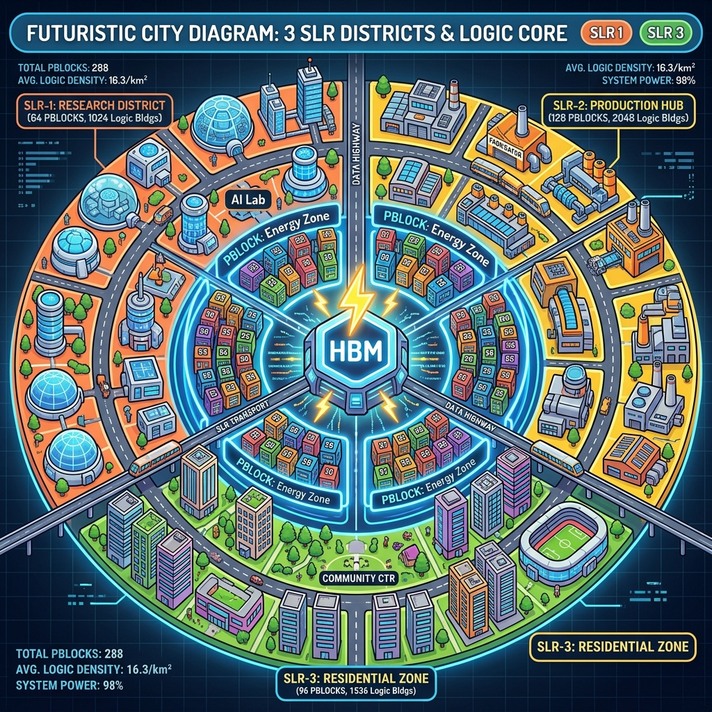

Section 1.4: The Heavy Hitters: SSI and HBM Devices for the Brave
You’ve mastered the basics of board layout and clocking. You’re feeling pretty good about your single-die FPGA. But then, your boss walks in and says, "We need more. More gates, more memory, more bandwidth. We’re moving to an SSI device with HBM." Suddenly, your simple design just got a whole lot more "interesting."
Welcome to the world of silicon megastructures. Dealing with Stacked Silicon Interconnect (SSI) and High-Bandwidth Memory (HBM) is like moving from building a house to architecting a skyscraper. The rules are the same, but the scale is terrifying. If you don't respect the physics of these heavy hitters, your design will collapse under its own weight.
SSI: Three Chips in a Trench Coat
Imagine you need a chip so big it’s impossible to manufacture in one piece. AMD’s solution is Stacked Silicon Interconnect (SSI) technology. They take multiple smaller dies—called Super Logic Regions (SLRs)—and mount them on a high-speed silicon interposer. To your software, it looks like one giant FPGA. But to your timing constraints, it’s a series of walled cities.
The catch is the "inter-SLR" crossing. When a signal travels from SLR0 to SLR1, it has to go through specialized routing tracks called Super Long Lines (SLLs). These tracks have much higher latency than local routing. If you treat an SSI device like a flat, uniform piece of silicon, your timing closure will be a nightmare of epic proportions.
Brain Power If a signal crossing an SLR boundary takes 2 nanoseconds, but your clock period is only 2.5 nanoseconds, how much time do you have left for actual logic and routing on either side? How does this change your pipeline strategy?
Crossing the Chasm: The SLR Latency Trap
The most common mistake in SSI design is trying to cross SLR boundaries at the last second. You can’t just let a 512-bit bus roam freely across the die. You have to treat SLR boundaries like international borders—you need to plan your crossing, check your luggage, and maybe wait in line.
This is where pipelining becomes your best friend. Every signal that crosses an SLR boundary should be registered on both sides. Think of it like a relay race; you don't just throw the baton across the field. You hand it off to a runner who is already at the boundary. If you don't pipeline your SLR crossings, your WNS (Worst Negative Slack) will look like a disaster movie.
Fireside Chat: The Logic and the Interposer
Local Logic: "Hey, I sent that data to the DSP block in the next SLR like five picoseconds ago. Why hasn't it arrived yet?"
Silicon Interposer: "Patience, kid! I'm a giant sheet of silicon, not a teleporter. You’re trying to send 1,000 signals across a 5-millimeter gap. Do you know how much capacitance I have to deal with?"
Local Logic: "But the tools said this was all one chip! I didn't think I had to wait."
Silicon Interposer: "The tools lied to make you feel better. I’m the trench coat holding these chips together. If you don't give me a register to hold onto while I move your data, I'm going to drop it. Register your crossings, or suffer the consequences."
HBM: The Firehose of Data
If SSI is about scale, HBM is about speed. Traditional DDR4 memory sits on the PCB, inches away from the FPGA. High-Bandwidth Memory (HBM) sits right on the silicon interposer, mere micrometers away from the logic die. It’s like moving your refrigerator into your bedroom so you don't have to walk to the kitchen.
The bandwidth is staggering—terabits per second. But with great power comes great complexity. The HBM interface is a hard IP block that sits at the bottom of the die. If your data-processing logic is sitting at the top of the die, you’ve just created a massive routing bottleneck. You have to plan your floorplan so your "thirsty" logic is as close to the HBM "fountain" as possible.
The Analogy: The Logistics Hub
Think of an SSI device as a massive logistics hub with several large warehouses (SLRs). Inside each warehouse, robots can move things incredibly fast. But moving something from Warehouse A to Warehouse B requires a specialized conveyor belt (SLL) that takes more time.
HBM is like having a high-speed automated storage system (ASRS) built into the foundation of the hub. It’s incredibly fast, but every robot in the hub wants to use it at the same time. If all your robots are at the far end of the hub, they’ll spend all their time traveling to the storage system instead of doing work. You have to position your most active robots right next to the HBM entrance.
Technical Deep Dive: SLR Dominant Constraints
In an SSI design, the location of your I/O pins determines which SLR your logic should live in. If you have a PCIe interface in SLR0 but your memory controller is in SLR2, your data is going to be spending a lot of time on the inter-SLR "highways." This creates congestion and kills your performance.
To fix this, we use "Pblocks" and "Logic Locking." You manually tell Vivado, "This logic belongs in SLR1, and it cannot leave." By forcing the tools to respect the physical boundaries of the silicon, you reduce the number of inter-SLR crossings and keep your high-speed paths short and sweet. Floorplanning isn't just for experts; it's the only way to survive the Heavy Hitters.

Code Detective: The SLR Crossing Check
You can use Tcl to find paths that are crossing SLR boundaries without being properly pipelined. This is a crucial check for SSI designs.
# Code Detective: Why is this path check incomplete?
set cross_paths [get_paths -from [get_cells -hier *] -to [get_cells -hier *] -filter {FROM_SLR != TO_SLR}]
foreach path $cross_paths {
set delay [get_property DATAPATH_DELAY $path]
if { $delay > 2.0 } {
puts "ERROR: High latency SLR crossing found: $path"
}
}
# Hint: Does this check for the presence of a register (FD) at the boundary?
The logic flaw here is that it only checks the delay, not the structure. A path might have a low delay today and still be un-registered, making it entirely dependent on the placer's mood — one incremental change and it collapses.
The fix. Ask the structural question directly: for every path that changes SLR, is it a register-to-register hop with no logic in between, and did it land on a Laguna site?
# Corrected: structural audit of every inter-SLR path, not a delay threshold.
# Run on a placed or routed design.
proc audit_slr_crossings {{max_paths 5000}} {
set unregistered 0
set no_laguna 0
set total 0
foreach path [get_timing_paths -max_paths $max_paths -nworst 1 -setup] {
set src_cell [get_cells -of_objects [get_property STARTPOINT_PIN $path]]
set dst_cell [get_cells -of_objects [get_property ENDPOINT_PIN $path]]
if {$src_cell eq "" || $dst_cell eq ""} { continue }
set src_slr [get_property NAME [get_slrs -of_objects $src_cell]]
set dst_slr [get_property NAME [get_slrs -of_objects $dst_cell]]
if {$src_slr eq $dst_slr} { continue }
incr total
# Levels of logic between the two registers. Anything above zero means you
# are asking combinational logic AND an SLL hop to fit in one period.
set levels [get_property LOGIC_LEVELS $path]
set src_loc [get_property LOC $src_cell]
set dst_loc [get_property LOC $dst_cell]
if {$levels > 0} {
incr unregistered
puts [format "LOGIC %2d level(s) %s -> %s slack %.3f ns" \
$levels $src_slr $dst_slr [get_property SLACK $path]]
}
if {![string match "LAGUNA_*" $src_loc] && ![string match "LAGUNA_*" $dst_loc]} {
incr no_laguna
puts [format "NO-SLL %s -> %s (routed through fabric, not a Laguna site)" \
[get_property NAME $src_cell] [get_property NAME $dst_cell]]
}
}
puts "\n$total inter-SLR path(s): $unregistered with logic, $no_laguna not on Laguna"
return [expr {$unregistered + $no_laguna}]
}
LOGIC_LEVELS > 0 on an SLR crossing is the finding that matters. The delay check in the
original only tells you the path is fast today; the structural check tells you whether
it will still be fast after the next placement run.
Thermal Density: The Heat of the Stack
When you pack that many gates and that much memory into a single package, you create a thermal hotspot. HBM chips are particularly sensitive to heat. If the FPGA die gets too hot, the HBM stack will throttle its performance or even shut down to protect itself.
Your power planning from Section 1.2 becomes even more critical here. You need an aggressive cooling solution—usually a high-performance heat sink with active airflow or even liquid cooling. You also need to distribute your logic so you don't have all your "hot" DSP blocks in one corner. Spread the work, spread the heat, and keep the silicon happy.
Analogy → Silicon
| In the story | In the silicon | Where the analogy breaks |
|---|---|---|
| Three chips in a trench coat | Multiple SLR dies on a passive silicon interposer | The trench coat is cosmetic; the interposer is a real electrical component with real per-crossing delay you must budget for |
| Walled cities / border crossing | The SLR boundary, crossed via SLLs terminating in Laguna register sites | Borders are checkpoints you can queue at; SLLs are a fixed, finite resource — run out and the design will not route, no matter how long you wait |
| Relay race baton hand-off | A USER_SLL_REG register pair: one Laguna TX flop, one Laguna RX flop |
Runners can hand off mid-stride; the crossing consumes a whole clock period, so you budget a full cycle, not a fraction |
| Warehouses with fast internal robots | Intra-SLR routing, which is ordinary fabric interconnect | Warehouse throughput is uniform; intra-SLR delay still varies enormously with distance and congestion |
| Fridge moved into the bedroom | HBM stacks on the same interposer as the logic die | You can walk to any fridge; HBM is reachable only through the hard controller at the bottom of the die, so physical proximity in your floorplan determines whether you get the bandwidth |
| Every robot wanting the storage system at once | 32 independent AXI ports into the HBM controller | Robots queue politely; AXI ports contend through a switch, and a badly distributed access pattern can leave most of the bandwidth idle while one port saturates |
Do the Math
Two calculations decide whether an SSI+HBM design is viable, and both are quick.
1. Can this path cross an SLR at all?
The setup equation for a register-to-register path is:
Givens (take \(T_{co}\), \(T_{setup}\) and the SLL delay from your own timing report — these are stand-ins to make the arithmetic concrete):
| Symbol | Meaning | Value |
|---|---|---|
| \(T_{\text{clk}}\) | 400 MHz target | 2.500 ns |
| \(T_{co}\) | Clock-to-out of the launch flop | 0.100 ns |
| \(T_{\text{setup}}\) | Setup of the capture flop | 0.050 ns |
| \(T_{\text{uncertainty}}\) | Jitter + skew allowance | 0.050 ns |
| \(T_{SLL}\) | Assumed inter-SLR crossing delay | 2.000 ns |
300 picoseconds. On UltraScale+ that is roughly one LUT delay plus its net — and only if the placer is generous. The verdict is unambiguous: an SLR crossing gets a clock cycle to itself. Register directly into the boundary, cross, register out, and do your logic in the cycles either side. There is no version of this where you also squeeze in a 32-bit comparator.
2. Will you actually get the HBM bandwidth you are paying for?
The HBM controller presents a set of independent AXI ports. Bandwidth is simply ports × width × frequency:
Givens (Virtex UltraScale+ HBM, two stacks — check your device and IP configuration):
| Symbol | Meaning | Value |
|---|---|---|
| \(N\) | AXI ports | 32 |
| \(W\) | Port data width | 256 bit |
| \(f_{HBM}\) | HBM AXI clock | 450 MHz |
Now the number nobody computes until it is too late. Suppose your processing fabric closes timing at 250 MHz, not 450 MHz, and you clock the AXI ports from your fabric clock:
You just threw away 44 % of the most expensive feature of the device by missing timing by 200 MHz. The alternatives are all architectural, which is why this belongs in planning and not in closure: run the AXI ports at the HBM clock and cross into your slower fabric domain through the controller's own clock conversion, or widen your fabric datapath to 512 bits so that 250 MHz still moves 16 GB/s per stream.
Sanity check the other direction too. If one processing kernel consumes 512 bits per cycle at 300 MHz:
If your design has four kernels, HBM is not your bottleneck and you should stop optimising it.
The Real Artifact
An SSI floorplan is a constraint file, not a wish. Here is a complete one for a three-SLR device: logic pinned per SLR, crossings forced onto Laguna registers, and the audit commands that prove it worked.
# ssi_floorplan.xdc
#
# Device: three-SLR UltraScale+ part. Adjust the CLOCKREGION ranges to your device -
# get them from the Device view, or with:
# get_property GRID_POINTS [get_slrs SLR0]
#
# Architecture being enforced:
# SLR0 - PCIe / host interface (its GT sites are here, so the logic must be too)
# SLR1 - processing kernels
# SLR2 - memory interface and buffering
# The point of the floorplan is that data crosses each boundary exactly once, in a
# pipeline stage that exists for no other purpose.
# ---- 1. Pin each subsystem to its SLR -------------------------------------------
create_pblock pblk_host
add_cells_to_pblock pblk_host [get_cells -hier -filter {NAME =~ "*u_pcie_subsys*"}]
resize_pblock pblk_host -add CLOCKREGION_X0Y0:CLOCKREGION_X7Y3
create_pblock pblk_kernels
add_cells_to_pblock pblk_kernels [get_cells -hier -filter {NAME =~ "*u_kernel_*"}]
resize_pblock pblk_kernels -add CLOCKREGION_X0Y4:CLOCKREGION_X7Y7
create_pblock pblk_mem
add_cells_to_pblock pblk_mem [get_cells -hier -filter {NAME =~ "*u_mem_subsys*"}]
resize_pblock pblk_mem -add CLOCKREGION_X0Y8:CLOCKREGION_X7Y11
# Leave EXCLUDE_PLACEMENT off: a soft pblock lets the placer relieve congestion at the
# edges. Turn it on only if you have proven the placer is escaping when it should not.
set_property CONTAIN_ROUTING false [get_pblocks pblk_kernels]
# ---- 2. Force the crossings onto Laguna registers --------------------------------
# These registers exist for one purpose: to be the flop on each side of an SLL hop.
# Naming the crossing pipeline explicitly in RTL (see below) makes this constraint
# a one-liner instead of a hand-maintained list.
set_property USER_SLL_REG TRUE \
[get_cells -hier -filter {NAME =~ "*slr_hop_reg*" && IS_SEQUENTIAL}]
# ---- 3. Keep the clock tree from spanning what it does not need to ---------------
set_property CLOCK_DELAY_GROUP kernel_grp \
[get_nets -of_objects [get_pins u_clk_gen/u_b312/O]]
# ---- 4. Prove it, after place_design -------------------------------------------
# report_design_analysis -complexity -congestion
# -> per-SLR utilisation and congestion levels; anything >= 5 needs attention
# report_utilization -slr
# -> did the pblocks actually hold, or did logic leak across?
# audit_slr_crossings
# -> the structural check from Code Detective above
# report_qor_suggestions
# -> Vivado's own opinion, including SLR-crossing pipelining advice
And the RTL pattern the constraint above depends on — a crossing that is nothing but a crossing:
// slr_hop.sv - one clock period, dedicated entirely to getting across the boundary.
//
// The naming matters: "slr_hop_reg" is what the USER_SLL_REG constraint matches on.
// Do not put logic in here. Not a mux, not an enable term, not a parity bit. The
// arithmetic in "Do the Math" showed the budget is ~300 ps; there is nothing to spend.
module slr_hop #(
parameter int WIDTH = 512,
parameter int STAGES = 2 // 1 flop each side of the boundary
) (
input logic clk,
input logic [WIDTH-1:0] din,
output logic [WIDTH-1:0] dout
);
(* dont_touch = "true" *) logic [WIDTH-1:0] slr_hop_reg [STAGES];
always_ff @(posedge clk) begin
slr_hop_reg[0] <= din;
for (int s = 1; s < STAGES; s++) begin
slr_hop_reg[s] <= slr_hop_reg[s-1];
end
end
assign dout = slr_hop_reg[STAGES-1];
endmodule
The dont_touch is doing real work here: without it, synthesis sees a chain of registers
with no logic between them and cheerfully absorbs it into an SRL or optimises a stage
away — deleting the exact structure the floorplan depends on.
Sharpen Your Pencil
- Your design targets 300 MHz (3.333 ns). Using the same \(T_{co}\), \(T_{\text{setup}}\) and \(T_{\text{uncertainty}}\) as the worked example, and an assumed 2.0 ns SLL delay, how much time is left for logic on an SLR crossing? Does the conclusion change?
- You have four processing kernels, each consuming 512 bits per cycle at 400 MHz. What fraction of a 460.8 GB/s HBM subsystem do they use? What would you do with the answer if your manager asks whether to buy the HBM part or the cheaper non-HBM one?
report_utilization -slrshows SLR1 at 91 % LUT utilisation and SLR0 at 43 %. Your pblocks are set as in the artifact above. Name the first thing you would change, and the report you would use to confirm it helped.
Final Thoughts on the Giants
Designing with SSI and HBM is the "Final Boss" of hardware architecture. It requires a deep understanding of the physical reality of the chip. You can't just write code; you have to be a city planner, a logistics expert, and a thermal engineer all at once. But when you see that terabit-per-second data flowing through your design, it’s all worth it.
Answers
Brain Power — 2 ns SLL crossing, 2.5 ns clock period: what is left, and how does it change your pipeline strategy?
This is the calculation worked in full above. The naive subtraction gives \(2.5 - 2.0 = 0.5\) ns, but that answer is wrong because it forgets the flop overheads. The real budget is:
300 ps — about one LUT and its net, and only if placement cooperates.
The strategy change: stop thinking of the crossing as part of a path and start thinking of it as a pipeline stage of its own. Concretely:
- Insert a dedicated register immediately before and immediately after every boundary,
with no logic between them (the
slr_hopmodule above). - Budget the crossing as one full clock cycle of latency, and account for it in your
protocol — an AXI handshake across an SLR needs its
READYpath pipelined too, or you have just halved your throughput while fixing your timing. - Cross once. A dataflow that ping-pongs between SLR0 and SLR1 four times costs four cycles and four sets of SLL resources. Reorganise the floorplan so the data flows one way through the die.
Sharpen Your Pencil #1 — At 300 MHz, \(T_{\text{clk}} = 3.333\) ns:
1.133 ns is real room — perhaps three to four levels of logic. So the arithmetic changes: at 300 MHz you could legally put logic in the crossing path.
The conclusion does not change. You still should not. The 2.0 ns SLL figure is an
assumption, and the actual delay depends on where the placer puts the two flops and how
congested the boundary is; a crossing that fits today at 1.133 ns of slack is one
incremental compile away from not fitting. A dedicated hop stage costs you one cycle of
latency and buys you a path that is immune to placement variation. That trade is almost
always correct, and it is what report_qor_suggestions will tell you to do anyway.
Sharpen Your Pencil #2 — Per kernel:
Four kernels: \(4 \times 25.6 = 102.4\) GB/s.
You are using just over a fifth of the HBM subsystem. What to tell your manager: the HBM part is not justified by this design as it stands. 102.4 GB/s is within reach of a conventional DDR4 memory subsystem on a much cheaper device.
The honest follow-up is the interesting one, though: is four kernels a requirement or an artefact? If the design is four kernels because that is all that fits, HBM is the wrong question and device size is the right one. If it is four kernels because that is all the work there is, buy the cheaper part. If the roadmap says sixteen kernels next year, the answer flips — 16 × 25.6 = 409.6 GB/s, which is 89 % of HBM and nowhere near DDR4.
Sharpen Your Pencil #3 — SLR1 at 91 % and SLR0 at 43 % is not a routing problem, it is a partitioning problem. At 91 % the placer has almost no freedom, congestion will be severe, and timing closure in SLR1 will dominate every run you do from here on.
First change: move work, not boundaries. Take one or two kernels out of
pblk_kernels and give them to SLR0, which is sitting half empty, then re-pipeline the
extra crossings that creates. Resist the temptation to simply grow pblk_kernels into
SLR0's clock regions — a pblock spanning an SLR boundary invites the placer to split
tightly coupled logic across the die at arbitrary points, which is precisely the failure
mode you floorplanned to avoid.
Confirm with report_utilization -slr (did the balance actually move?) and
report_design_analysis -congestion (did the congestion level in SLR1 drop below 5?).
Then re-run audit_slr_crossings to check the extra crossings you just created are all
registered.
There Are No Dumb Questions
Q: Are Laguna registers something I instantiate?
A: No — they are ordinary registers that the placer puts on Laguna sites, which are the
flops physically adjacent to the SLL routing. You influence it with USER_SLL_REG TRUE,
which tells the placer "this register is a boundary-crossing register, treat it as a
candidate for a Laguna site." Vivado also does this on its own when it recognises a
registered crossing, which is another argument for making your crossings structurally
obvious.
Q: How many SLLs do I actually have?
A: A fixed number per boundary, in the tens of thousands, and it is device specific — get
it from your device's data sheet rather than from any book, including this one. What
matters operationally is that it is finite and unshared: a 512-bit bus crossing in both
directions consumes over a thousand of them before you have done anything clever, and
report_design_analysis prints how many you used.
Q: My design fits in one SLR. Do I still need to care?
A: You need to make sure it stays in one SLR. Nothing forces the placer to respect a
boundary it was never told about; a design that fits comfortably can still be scattered
across two SLRs because that happened to shorten some data path. One pblock at the top
level costs you nothing and removes the entire class of problem. Check with
report_utilization -slr — if a design you believe is single-SLR shows logic in two,
that is your answer.
Q: Does HBM remove the need for a floorplan?
A: It intensifies it. The HBM controller is hard IP at one edge of the die. Logic that talks to it and sits at the far edge pays the distance on every access, and — because there are 32 ports — you can create 32 simultaneous long-distance routes through the middle of your design. HBM designs are the ones where floorplanning stops being optional soonest.
Bullet Points
- SLR crossing budget: \(T_{\text{clk}} - T_{co} - T_{\text{setup}} - T_{\text{uncertainty}} - T_{SLL}\). At 400 MHz with a 2 ns SLL, that leaves ~300 ps. Give the crossing its own cycle.
- Cross once, in one direction. Every extra crossing is a cycle of latency and a block of SLL resources.
- Structural, not delay-based, checking:
LOGIC_LEVELS > 0on an inter-SLR path is the defect. Fast today ≠ safe tomorrow. dont_touchyour hop registers, or synthesis will absorb them into an SRL and silently delete your floorplan's assumptions.- HBM bandwidth = ports × width × frequency. 32 × 256 bit × 450 MHz = 460.8 GB/s. Clocking those ports from a 250 MHz fabric domain throws away 44 % of it.
- Compute your demand before buying the part: kernels × width × frequency ÷ 8. If you are under ~25 % of HBM, the device choice is probably wrong.
- Constraints:
create_pblock/add_cells_to_pblock/resize_pblock,USER_SLL_REG,CONTAIN_ROUTING,CLOCK_DELAY_GROUP. - Reports:
report_utilization -slr,report_design_analysis -complexity -congestion,report_qor_suggestions, andget_slrs -of_objects [get_cells ...]for ad-hoc queries.
[REVIEW_STATUS: APPROVED BY PUBLISHER]